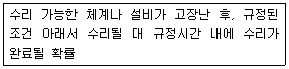
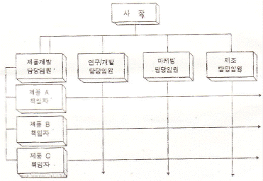
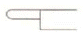
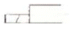
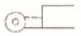
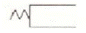

설비보전기사(구) (2008-09-07 기출문제)
1과목: 설비 진단 및 계측
1. 다음 열전대 종류 중 내열성이 좋고 산화성 분위기 중에서도 강하며 대개 1000℃이상에서 사용되는 것은?
- J Type
- K Type
- R Type
- T Type
(정답률: 77%)

2. 신호를 FFT 분석기로 분석할 때 한정된 길이의 시간 데이터만을 인출(capturing)하여 이를 한 주기로 하는 신호가 반복된다고 가정한다. 이때 데이터의 불연속성이 연결이음매에서 발생할 수 있어 에러가 발생되는데 이를 방지하는 방법으로 가장 적합한 것은?
- 인출(capturing)된 시간 데이터에 윈도우 함수(windowfunction)를 적용시킨다.
- A/D 변환된 시간 신호에 안티 에리에싱필터(anti-aliasing fillter)를 적용시킨다.
- 데이터 샘플링(sampling) 길이를 늘인다.
- 측정 주파수 범위를 줄인다.
(정답률: 74%)
3. 서보모터에 사용되고 있는 회전속도 검출기로 적당하지 않은 것은?
- 태코 제너레이터
- 인코더
- 리졸버
- 로드셀
(정답률: 65%)
4. 진동폭의 ISO 단위에서 틀린 것은?
- 변위(m), 속도(m/s), 가속도(m/s2)
- 변위(mm), 속도(mm/s), 가속도(m/s2)
- 변위(㎛), 속도(m/s), 가속도(m/s2)
- 변위(㎛), 속도(m/s2), 가속도(m/s)
(정답률: 82%)
5. 소음계를 취급하는 경우 주의를 요하는 사항이 아닌 것은?
- 암소음 영향에 대한 지시치를 보정한다.
- 변동이 적은 소음은 fast에, 변송이 심한 소음은 slow에 놓고 측정한다.
- 기본적으로 측정 마이크로폰 주위에 가능한 한 장애물이 없어야 한다.
- B 및 C 회로 보정 레벨 측정 결과와 A회로레벨, 측정 결과의 비교에 의해 대략적인 주파수 대역 판정 평가의 실마리를 풀 수 있다.
(정답률: 71%)
6. 베어링 소음의 발생원에 따른 특성 주파수의 관계식이 잘못 된 것은? (단 r1 = 내륜의 반경, r2 = 외륜의 반경, r3 = 볼(Ball) 또는 롤러(Roller)의 반경, m = 볼(Ball) 또는 롤러(Roller) 의 수, nr = 내륜의 회전속도(rpm) 이다.)
- 베어링의 편심 혹은 불균형에 의한 회전 소음 주파수 (fr) : fr = nr
- 볼, 롤러 또는 케이스 표면의 불균일에 의한 소음주파수 (fc) : fc = nr x r1 / (r1 + r2)
- 볼 또는 롤러의 자체회전에 의한 소음 주파수 (fB) : fB = (r2 / rB) x nr x r1/(r1+r2)
- 내륜 표면의 불균일에 의한 소음 주파수 (f1) : f1 = nr x m x r1 / (r1+r2)
(정답률: 52%)
7. 금속 전기 도체의 저항 크기를 좌우하는 요인들 중 옳지 않는 것은?
- 금속 전기 도체의 저항은 길이에 직접적으로 비례한다.
- 금속 전기 도체의 저항은 온도에 상관없이 일정하다
- 금속 전기 도체의 저항은 그 단면적에 반비례한다.
- 금속 전기 도체의 저항은 금속의 종류에 따라 달라진다.
(정답률: 80%)
8. 음의 회절에 대한 설명으로 옳은 것은?
- 파장이 작고 장애물이 클수록 회절은 잘 된다.
- 물체의 틈 구멍에 있어서는 틈 구멍이 클수록 회절은 잘 된다.
- 음파가 한 매질에서 타 매질로 통과할 때 구부러지는 현상이다.
- 장애물 뒤쪽으로 음이 전파되는 현상이다.
(정답률: 77%)
9. 차음벽의 차음효과는 무엇에 의해 정해지는가?
- 반사율
- 투과율
- 소음율
- 진동율
(정답률: 76%)
10. 진동방지 기술로서 진동 발생원에 대한 방진대책이 아닌것은?
- 진동원 위치를 멀리하여 거리 감쇠를 크게 한다.
- 가진력을 감쇠시킨다.
- 불평형력에 대한 밸런싱을 수행한다.
- 기초 중량을 부가 또는 경감시킨다.
(정답률: 62%)
11. 고유진동수와 강제진동수가 일치할 경우 진폭이 크게 발생하는 현상을 무엇이라고 하는가?
- 공진
- 풀림
- 상호간섭
- 캐비테이션
(정답률: 84%)
12. 근접센서의 종류가 아닌 것은?
- 유도 브리지 (bridge)형
- 자기형
- 정전 용량형
- 로터리 엔코더(rotary encoder)형
(정답률: 59%)
13. 다음 중 음압의 단위로 적합한 것은
- N
- kgf
- ㎨
- N/m2
(정답률: 85%)
14. 미스얼라이인먼트(misalignment)에 관한 설명으로 틀린것은?
- 보통 회전주파수의2f(3f)의 특성으로 나타난다.
- 커플링 등으로 연결된 축의 회전 중심선(축심)이 어긋난 상태로서 일반적으로는 정비 후에 발생하는 경우가 많다.
- 축 방향에 센서를 설치하여 측정되므로 축진동의 위상각은 180°가 된다.
- 진동 파형이 항상 비주기성을 갖는다.
(정답률: 72%)
15. 진동의 완전한 1사이클에 걸린 총 시간을 무엇이라 하는가?
- 진동주기
- 진동수
- 각진동수
- 진동위상
(정답률: 85%)
16. 다음 중 측온저항체에서 공칭저항값은 몇 [℃]에서의 저항값을 말하는가?
- -10 에서의 저항값
- 0 [℃]에서의 저항값
- 10 [℃]에서의 저항값
- 20 [℃]에서의 저항값
(정답률: 82%)
17. 자계의 방향이나 강도를 측정할 수 있는 자기 센서는?
- 포토 다이오드(photo diode)
- 서미스터 (thermistor)
- 서모파일 (thermopile)
- 홀 센서 (hall sensor)
(정답률: 78%)
18. 진동의 에너지를 표현하는 것에 적합한 값은?
- 피크값
- 피크 - 피크
- 실효값
- 평균값
(정답률: 84%)
19. 설비진단의 개념으로 알맞지 않은 것은?
- 이상이나 결함의 원인 파악
- 신뢰성 및 수명의 예측
- 단순한 점검의 계기화
- 수리 및 개량법의 결정
(정답률: 62%)
20. 소음원 주변지역의 음장에서 음원의 직접음과 벽에 의한 반사음이 중복되는 구역을 무엇이라고 하는가?
- 확산음장
- 잔향음장
- 자유음장
- 근음장
(정답률: 65%)
2과목: 설비관리
21. 만성화된 설비나 시스템의 불합리 현상을 원리 및 원칙에 따라 물리적으로 해석하여 현상의 메카니즘을 밝히는 사고방식은?
- FMECA
- ALDEP
- CRAFT
- PM
(정답률: 59%)
22. 오버홀(Overhaul)은 설비의 효율을 높이기 위하여 관리하는데 매우 중요한 활동이다. 오버홀(Overhaul) 은 어떤 보전 활동에 포함되는가?
- 일상보전활동
- 사후보전활동
- 예방보전활동
- 개량보전활동
(정답률: 73%)
23. 종합적 생산보전(TPM : Total productive maintenance)에 대한 설명 중 바르지 못한 것은?
- TPM의 특징은 고장 제로, 불량 제로 달성을 위한 제로(0) 목표에 있다.
- TPM의 목표는 설비, 사람, 현장이 변하지 않는데 있다.
- TPM의 목표는 현장의 체질 개선에 있다.
- TPM의 목표는 맨(man), 머신(machine), 시스템(system) 을 극한 상태까지 높이는데 있다.
(정답률: 73%)
24. 설비의 라이프 사이클에 대한 설명 중 틀린 것은?
- 협의의 설비관리는 제작, 설치, 운전, 보전의 활동을 말한다.
- 건설과정은 설계, 제작, 설치의 과정을 포함한다.
- 조업과정은 운전, 보전, 폐기의 과정을 포함한다.
- 설치 투자 계획 과정은 설비의 조사, 연구를 포함한다.
(정답률: 51%)
25. 생산하는 제품의 유형과 단위 시간 당 생산량에 따라 설비의 배치를 다르게 한다. 다음 중 제품을 대량 생산하는 경우에 가장 적합한 설비의 배치를 무엇이라 하는가?
- 제품고정 배치
- 제품별 배치
- 그룹별 배치
- 공정별 배치
(정답률: 69%)
26. 선반용 바이트, 밀링용 커터, 호빙머신용 호브 등은 무슨 공구 인가?
- 연삭공구
- 절삭공구
- 형(die)
- 치구
(정답률: 84%)
27. 다음 중 설비의 경제성 평가방법이 아닌 것은?
- 변환법
- 비용비교법
- 자본회수법
- MAPI 방식
(정답률: 63%)
28. 설비관리 업무의 요원 대책이 아닌 것은?
- 최고 부하를 없앤다.
- OSR(on stream repair)은 위험하기 때문에 피한다.
- OSI(on stream inspection)는 피크를 피하고자 하는 것이다.
- 유닛 방식을 최대한 활용한다.
(정답률: 72%)
29. 다음 중 설비의 신뢰성 평가척도가 아닌 것은?
- 고장률
- 평균고장간격
- 설비유효가동율
- 평균고장시간
(정답률: 70%)
30. 설비보전방법의설명 중 맞는 것은?
- 정기보전(Periodic Maintenance)은 설비의 특정 운전조건을 유지시키기 위하여 수행되는 모든 계획보전의 전형적 보전활동이다.
- 사후보전(Breakdown Maintenance)은 설비나 부품의 고장결과 때문에 발생하는 열화현상을 다시 원상태로 회복시키기 위한 보전활동이다.
- 보전예방(Mainenance Prevention: MP)은 설비의 잠재 열화현상에 대한 정확한 상태를 예측하기 위하여 측정 설비를 사용하여 직접 설비를 감지하는 보전활동이다.
- 예지보전(Predictive Maintenance)은 설비의 설계. 제작 단계에서 보전활동이 불필요하거나 적데 되는 설비를 만드는 보전활동이다.
(정답률: 61%)
31. 설비보전의 요소에 해당되지 않는 것은?
- 열화방지
- 열화측정
- 열화회복
- 열화지연
(정답률: 73%)
32. 품질불량은 설비, 가공조건 및 인적 요소에 의해 발생한다고 볼 수 있는데 이러한 불량을 “0”으로 달성하기 위한 접근 방법이 아닌 것은?
- 설비 개량능력 개발
- 설비 등급에 따른 보전 방식 결정
- 설비의 유연성으로 설비능력 확보
- 교육. 훈련의 철저
(정답률: 50%)
33. 시스템의 탄생에서부터 사멸에 이르기까지의 라이프 사이클은 4단계로 나누어 볼 수 있다. 다음 중 1 단계에 해당하는 것은?
- 시스템의 설계, 개발
- 제작, 설치
- 시스템의 개념 구상 및 규격 설정
- 운용, 유지
(정답률: 76%)
34. 공장 설비를 분류하는데 있어서 간단명료하고 외우기 쉽도록 하기 위해서 숫자. 문자, 도형 등 기호를 사용한다. 다음 중 뜻이 있는 기호법이 대표적인 것으로서 기억이 편리하도록 문자의 기호로 표기하는 기호법은?
- 순번식 기호법
- 세구분식 기호법
- 기억식 기호법
- 십진 분류 기호법
(정답률: 79%)
35. 자주보전을 설명한 것 중 틀린 것은?
- 불량을 제거하여 불량이 발생되지 않는 조건을 설정하여 적절히 유지하면서 불량이 발생하지 않도록 한다.
- 운전 부문에서 행하는 자발적이 보전 활동이다.
- “초기청소-발생원 곤란개소 대책-점검/급유기준 작성-총점검-자주점검-자주보전의 시스템화-자주관리의 철저”와 같이 7단계를 거쳐 전개 된다.
- 운전자가 참여하는 소진단 활동을 중심으로 운전자 스스로 전개하는 하나의 보전 활동이다.
(정답률: 57%)
36. 다음 내용은 무엇을 정의한 것인가?

- 보전도
- 신뢰성
- 신뢰도
- 가용도
(정답률: 57%)
37. 공사의 완급도에 따라 구분할 때 설비검사 및 공사 실시 시기가 충분한 여유를 가지고 지정된 공사로서 일정계획을 세워서 통제하는 예방보전 공사는 무엇인가?
- 긴급공사
- 준급공사
- 계획공사
- 예비공사
(정답률: 81%)
38. 다음은 설비관리 조직 중에서 어떤 현태의 조직인가.

- 제품중심 조직
- 제품중심 매트릭스 조직
- 설계보증 조직
- 기능중신 매트릭스 조직
(정답률: 75%)
39. 가공 및 조립형 설비 6대 로스 중 돌발적 또는 만성적으로 발생하는 고장에 의하여 발생되는 시간 로스는?
- 속도저하 로스
- 순간정지 로스
- 수율저하 로스
- 고장 로스
(정답률: 64%)
40. 공장 내에서 일차 목적을 위해 사용된 후의 배열(徘熱)회수에 있어서 고려해야 할 것 중 틀린 것은?
- 각 열 설비마다 배열(徘熱)의 양 및 질 파악
- 배열(徘熱) 하는 방법에 대해 기술적, 가능성 및 경제성 검토
- 열을 사용하는 설비의 가열방법 및 설비의 규모 작업 부하 검토
- 회수에 필요한 비용 및 회수 열의 품질 작업조건 등을 분석하여 가장 이용가치가 있는 방법을 선택
(정답률: 52%)
3과목: 기계일반 및 기계보전
41. 접착제의 구비조건으로 틀린 것은?
- 액체성을 가질 것
- 모세관작용을 할 것
- 고체화 하여 일정한 강도를 가질 것
- 윤활성을 가질 것
(정답률: 75%)
42. 아크용접 시 아크 쏠림의 방지 대책으로 옳은 것은?
- 교류용접을 하지 않고 직류 용접을 할 것
- 접지점을 될 수 있는 대로 용접부에 가까이 할 것
- 아크를 길게 할 것
- 받침쇠, 긴 가접부, 이음의 처음과 끝에 앤드탭을 이용할 것
(정답률: 67%)
43. 진동이 있는 차량. 항공기, 동력기 등의 체결용 요소 풀림과 누설방지를 위해 사용되는 접착제로 맞는 것은?
- 금속구조용 접착제
- 혐기성 접착제
- 액상 개스킷
- 열 용융형 접착제
(정답률: 70%)
44. 선반에서 테이퍼를 절삭하는 방법 중 잘못된 것은?
- 복식공구대를 경사시키는 방법
- 심압대를 평위시키는 방법
- 테이퍼 절삭장치를 사용하는 방법
- 척의 죠(jaw) 편위 시키는 방법
(정답률: 68%)
45. 설비를 가장 효율적으로 이용하기 위한 고장로스의 방지 대책으로 잘못 된 것은?
- 강제열화를 방치하지 않는다.
- 바른 사용조건을 지킨다.
- 설계속도와 실제속도의 차이를 줄인다.
- 보전요원의 보전 품질은 높인다.
(정답률: 67%)
46. 다음 중 비접촉성 실은?
- 래빌린스 패킹
- 메커니컬 실
- 셀프 실 패킹
- 그랜드 패킹
(정답률: 59%)
47. 볼트, 너트의 죔 토크(Torque)에 대한 식으로 맞는 것은? (단 T:토크, F:힘, ℓ:길이, A:단면적, W:중량)
- T = F/A (kgf - m)
- T = ℓ x F (kgf - m)
- T = ℓ/F (kgf - m)
- T = F x W (kgf - m)
(정답률: 55%)
48. 베어링 체커의 사용에 대한 설명으로 맞는 것은?
- 회전을 정지 시키고 사용한다.
- 그라운드 잭은 지면에 연결한다.
- 동력전달 상태를 알 수 있다.
- 입력 잭을 베어링에서 제일 가까운 곳에 접촉 시킨다.
(정답률: 76%)
49. 전동기의 회전이 고르지 못할 때의 원인은 다음 중 어느것인가?
- 코일의 절연물이 열화 되었거나 배선이 손상되었을 때
- 전압의 변동이 있거나 기계적 과부하가 발생되었을 때
- 리드선 및 접속부가 손상되었거나 서머 릴레이가 작동 되었을 때
- 단선 되었거나 냉각이 불량할 때
(정답률: 57%)
50. 기계가공 또는 줄 작업 이후에 정밀 다듬질이 필요할 때 하는 것은?
- 드레싱(dressing) 작업
- 숏 피닝(shot-peening) 작업
- 스크레이퍼(scraper) 작업
- 다이스(dies) 작업
(정답률: 78%)
51. 코일 스프링을 도면에 표현할 때의 사항으로 맞지 않는것은?
- 스프링에 가해지는 하중을 명기하지 않아도 하중에 가해진 상태로 도시한다.
- 도면에 감긴 방향이 표시되지 않은 코일스프링은 오른쪽 감기로 도시한다.
- 스프링의 중간 부분은 가상선을 이용하여 생략 도시할 수 있다.
- 스프링의 종류, 모양만을 도시할 경우 굵은 실선으로 그린다.
(정답률: 54%)
52. 키 맞춤의 기본적인 주의사항 중 틀린 것은?
- 키의 치수, 재질, 형상, 규격 등을 참조하여 충분한 강도의 규격품을 사용한다.
- 키를 맞추기 전에 축과 보스의 끼워맞춤이 불량한 상태인 경우 키 맞춤을 할 필요가 없다.
- 키는 측면에 힘을 받으므로 폭 치수가 중요하다.
- 키 홈은 축과 보스를 기계가공으로 축심과 완전히 직각으로 깍아낸다.
(정답률: 71%)
53. 기어의 손상 중 표면피로가 아닌 것은?
- 초기 피칭
- 스코어링
- 박리
- 파괴적 피칭
(정답률: 59%)
54. 압축기의 밸브 플레이트 교환요령에 관한 설명으로 맞는 것은?
- 교환시간이 되었으면 사용한계의 기준치 내에서도 교환한다.
- 마모한계에 달하였어도 파손되지 않았으면 사용한다.
- 밸브 플레이트는 파손이 없으므로 계속 사용한다.
- 마모된 플레이트는 뒤집어서 1회에 한해 재사용 한다
(정답률: 79%)
55. 감속기의 양호한 조립상태를 유지하기 위한 조치로 잘못된 것은?
- 정확한 윤활의 유지
- 이 면의 마모상태 파악
- 빈번한 분해수리 실시
- 이상의 조기 발견
(정답률: 84%)
56. 벨트 전동 장치에서 전달 동력에 대한 설명 중 틀린 것은?
- 마찰계수의 값이 크며 클수록 큰 동력을 전달시킬 수 있다.
- 접촉각이 클수록 큰 동력을 전달시킬 수 있다.
- 원심장력이 크면 클수록 전달 동력이 증가된다.
- 장력비가 클수록 전달동력이 커진다.
(정답률: 56%)
57. 다음 중 용적형 압축기는?
- 축류 압축기
- 터보 압축기
- 레이디얼 압축기
- 왕복동 압축기
(정답률: 53%)
58. 녹에 의한 볼트 너트의 고착을 방지하는 방법으로 틀린것은?
- 볼트너트를 죈 후 아주 높은 온도로 가열한 후 식힌다.
- 나사틈새에 부식성 물질이 침입하지 않도록 한다.
- 산화연분을 기계유로 반죽한 적색 페인트를 나사부분에 칠한 후 된다.
- 유성 페인트를 나사부분에 칠한 후 죈다.
(정답률: 78%)
59. 담금질하여 경화된 강을 변태가 일어나지 않는 A1점(온도) 이하에서 가열한 후 서냉 또는 공냉하는 열처리 방법으로 재료에 인성을 부여하는 작업을 무엇이라 하는가?
- 뜨임
- 불림
- 풀림
- 질화
(정답률: 75%)
60. 브레이크의 용량 결정과 거리가 먼 것은?
- 접촉면의 크기
- 마찰계수
- 브레이크의 중량
- 발열
(정답률: 71%)
4과목: 윤활관리
61. 윤활관리의 조직에서 윤활 실시 부문을 윤활담당자와 집유원으로 구분할 때 윤활담당자의 직무에 해당되지 않는 것은?
- 표준적 유량 결정 및 윤활 작업 예정표 작성
- 윤활 대장 및 각종 기록 작성, 보고
- 급유장치 관계의 예비품 수배
- 윤활제의 육안검사 및 간단한 윤활제 교환
(정답률: 67%)
62. 윤활유 열화에 영향을 미치는 인자 중 내부변화에 의한 인자는?
- 유화
- 희석
- 산화
- 이물질 혼입
(정답률: 71%)
63. 고하중, 충격하중으로 기어에 소부마모가 발생하였다. 대책으로 맞는 것은?
- 극압 첨가제가 첨가된 기어유로 선정
- 속도에 따라서 적정한 점도를 선정
- 윤활유의 작동 온도를 높게 선정
- 내수성이 아주 큰 기어유를 선정
(정답률: 71%)
64. 윤활설비의 고장 원인으로 볼 수 없는 것은?
- 과소급유
- 이물질의 혼입
- 마찰면의 마멸에 의한 기계부분의 변형
- 화학적 피막 또는 층상 고체피막의 형성
(정답률: 45%)
65. 다음 중 윤활관리를 효율적으로 수행하기 위한 방법으로 적절하지 않은 것은?
- 공장 내에서 사용되는 윤활제 종류를 최소화하여 구매 및 재고관리 업무의 효율성을 향상 시킨다.
- 각 윤활개소의 윤활유와 그리스는 개량하지 않고 지속적으로 사용한다.
- 급유작업자를 위한 급유의 순서와 경로 등의 계획을 세운다.
- 윤활부부의 이상 점검과 보고, 윤활제 공급 작업 및 윤활보전작업 실행확인을 위한 기록을 한다.
(정답률: 80%)
66. 다음 중 윤활관리의 목적이 아닌 것은?
- 고장과 성능저하 방지
- 기계설비의 완전운전을 도모
- 생산성 향상 및 경제성 향상
- 윤활소비 증대
(정답률: 83%)
67. 윤활관리의 기본적 효과로 틀린 것은?
- 윤활 사고의 방지
- 윤활 비용의 증가
- 보수 유지비의 절감
- 동력비의 감소
(정답률: 74%)
68. 윤활유의 일반적인 성질을 잘못 설명한 것은?
- 비중(Specific Gravity)은 성능을 결정짓는데 중요한 요소는 아니고 오일의 종류을 파악하는데 유용하다.
- API도는 미국석유협회에서 정한 비중이며, 물을 1로 하여 물보다 가벼운 것은 1 이상, 물보다 무거운 것은 1 이하의 수치로 표현한다.
- 점도는 액체가 유동할 때 나타나는 내부 저항을 나타낸다.
- 점도지수(Viscosity Index)는 윤활유의 점도와 온도관계를 지수로 나타낸 것이다.
(정답률: 58%)
69. 기어윤활에 관련된 내용으로 맞는 것은?
- 기어윤활에서 가장 중요시 하여야 할 특성은 유성(Oiliness)이다.
- 유욕급유와 강제순환식 급유방식은 밀폐형기어의 급유 방식에 적당하다.
- 공업용 기어유의 대표적인 관리항목으로는 동판부식, 색, 침전가. 잔류탄소분이다.
- 미끄럼속도가 크고 운전속도가 높은 윔기어유에서 특히 요구하는 품질 특성은 고점도지수(High ViscosityIndex)이다.
(정답률: 55%)
70. 베어링이나 기어 등에 사용되는 윤활유는 사용 중에 교반에 의하여 기포가 오일 중에 생성되며, 이것은 마찰면에 들어가면 마멸이나 윤활유의 열화를 촉진시키는데 이와 같은 현상을 방지하기 위하여 윤활유에 요구하는 성질은?
- 소포성
- 내 하중성
- 점도
- 청정분산성
(정답률: 74%)
71. 다음은 액체 윤활에 비해서 그리스 윤활의 장점을 설명한것이다 틀린 것은?
- 밀봉성이 높아 먼지 등의 침입을 방지한다.
- 냉각 작용이 우수하다.
- 누설이 적다.
- 급유 간격이 길다.
(정답률: 73%)
72. 다음에 설명하는 윤활 상태 중 경계윤활 상태를 설명한 것은?
- 후막 윤활로도 불리며, 가장 이상적인 윤활상태이다.
- 불완전 윤활이라고도 하며, 고하중 저속상태에서 발생하기 쉽다.
- 급압 윤활이라고도 한다.
- 마찰계수는 0.01~0.⑤ 정도이다.
(정답률: 67%)
73. 그리스의 시험 방법에 관한 설명 중 잘못 된 것은?
- 주도 : 그리스의 단단하기 즉, 그리스가 얼마나 굳은가를 측정하는 시험
- 적점 : 그리스 중에 함유되어 있는 수분과 저휘발성인 광유의 함유량을 확인하는 시험
- 동판부식 : 그리스가 장비에 미치는 부식의 영향을 대신 하는 시험
- 수세내수성 : 그리스가 물과 접촉된 경우의 저항성을 알고자 하는 시험
(정답률: 73%)
74. 그리스 윤활의 고장 원인별 대책 중 구름 베어링에서 온도 상승의 추정원인과 거리가 먼 것은?
- 그리스 과다
- 그리스 고갈
- 윤활유 선택의 오류
- 밀봉재 불량
(정답률: 57%)
75. 오염도 측정법 중에서 질량법에 의한 방법으로서 NAS 오염도 등급 기준으로 일반 사용에서의 사용 한계라고 할수 있는 기준치는?
- NAS 3급
- NAS 5급
- NAS 7급
- NAS 12급
(정답률: 69%)
76. 윤활유의 열화 판정 중 직접 판정법에 대한 설명으로 틀린 것은?
- 신유 성상을 사전에 명확히 파악한다.
- 사용유의 대표적 시료를 채취하여 성상을 조사한다.
- 신유와 사용유의 성상을 비교 검토 후 관리기준을 정하고 교환하도록 한다.
- 투명한 2장의 유리관에 기름을 넣고 투시해서 이물질의 유무를 조사한다.
(정답률: 69%)
77. 왕복동 공기 압축기 윤활유의 외부유에 요구되는 성능이 아닌 것은?
- 적정 점도를 가질 것
- 산화 안정성이 좋을 것
- 방청성이 좋은 것
- 저점도 지수 기름일 것
(정답률: 77%)
78. 다음 그리스의 내열성을 평가하는 기준이 되고 그리스 사용온도가 결정되는 윤활제의 성질은?
- 주도
- 적점
- 이유도
- 혼화안정도
(정답률: 61%)
79. 일반작동유(일반기계)의 일반적인 관리한계(교환기준)로 틀린 것은?
- 수분 : 0.5%(용량) 이하
- 전산가(신유대비증가) : 0.5mgKOH/g 이하
- n-펜탄불용분 : 0.⑤%(무게) 이하
- 동점도의 변화 : 신유의 ±15% 이내
(정답률: 64%)
80. 다음은 윤활유 급유방법과 윤활제, 윤활장치를 연결한 것이다. 틀리게 연결한 것은?
- 수동급유 - 그리스 - 그리스 건
- 적하급유 - 윤활유 - 심지급유기
- 자기순환급유 - 윤활유 - 분무장치
- 강제순환급유 - 그리스 - 자동집중급유 장치
(정답률: 63%)
5과목: 공유압 및 자동화
81. 베인 펌프의 특징과 거리가 먼 것은?
- 베인의 마모로 인한 압력저하가 적다.
- 기어펌프나 피스톤 펌프에 배해 토출 압력의 맥동이 적다.
- 맥동이 적으므로 소음이 적다.
- 시동토크가 커서 급속시동이 어렵다.
(정답률: 73%)
82. 개회로 제어에 대한 설명이다 맞는 것은?
- 오차에 적절히 대처하는 능력이 있다.
- 오차를 자동적으로 대처해 나간다.
- 피드백 신호를 통해 목표값에 도달한다.
- 외란에 의해서 발생되는 오차에 대한 대처 능력이 없다.
(정답률: 61%)
83. 실린더를 임의의 위치에서 고정시킬 수 있도록 밸브의 중립 위치에서 모든 포트를 막은 형식의 4/3way 밸브 종류는?
- 세미오픈센터형
- 클로즈드센터형
- 탠덤센터형
- 오픈센터형
(정답률: 78%)
84. 밀폐된 용기 속에 가득 찬 유체에 가해지는 힘에 의해 면에 수직방향이고, 크기가 동일한 힘이 내부에서 동시에 전달되는 원리는?
- 벤츄리(Venturi)의 원리
- 파스칼(Pascal)의 원리
- 베르누이(Bernoulli)의 원리
- 오일러의(Euler) 원리
(정답률: 71%)
85. 유압시스템에서 사용되는 비례제어 밸브를 기능에 따라 나눌 때 해당되지 않는 것은?
- 방향제어 밸브
- 압력제어 밸브
- 시간제어 밸브
- 유량제어 밸브
(정답률: 71%)
86. 두 개의 입구와 한 개의 출구가 있는 밸브로 두 개의 입구에 압력이 모두 작용해야 출력이 발생하는 밸브는?
- 스톱(stop) 밸브
- 셔틀(shuttle) 밸브
- 급속배기(quick exhaust) 밸브
- 2압(two pressure) 밸브
(정답률: 65%)
87. 다음 중 공기압 조정유닛의 구성요소로 맞는것은?
- 필터, 압력조절기, 냉각기
- 윤활기, 압력조절기, 건조기
- 필터, 윤활기, 축압기
- 필터, 윤활기, 압력조절기
(정답률: 65%)
88. 다음 중 공압 액추에이터가 아닌 것은?
- 공압 실린더
- 공기 압축기
- 공압 모터
- 요동액추에이터
(정답률: 49%)
89. DC모터에서 회전하는 정류자에 전류를 흘려주는 소모성 접촉물은 무엇인가?
- 코일
- 브러쉬
- 회전자
- 베어링
(정답률: 72%)
90. 다음 중 공유압의 특징 설명으로 맞는 것은?
- 공압장치는 정밀한 속도조절이 가능하다.
- 공압장치는 위치결정 및 중간정지가 가능하다.
- 유압장치는 진동이 많고 응답성이 나쁘다.
- 유압장치는 기름탱크의 용량이 커서 소형화가 어렵다.
(정답률: 60%)
91. 압축공기의 건조방식이 아닌 것은?
- 흡수식
- 흡착식
- 냉동건조식
- 고온건조식
(정답률: 55%)
92. 방향제어 밸브의 조작 방식 기호 중 기계적 방식이 아닌것은?




(정답률: 56%)
93. 직각좌표상에서 두 축을 동시에 제어할 때 한 점에서 다른점 까지 움직이는 궤적이 원이 되도록 제어하는 방법에 대한 용어로 맞는 것은?
- 포인트 투 포인트(point to point)
- 티칭 플레이 백(teaching play back)
- 원호 보간(interpolation)
- 머니 플에이터(manipulator)
(정답률: 71%)
94. 많은 공압기기를 사용하는 공장의 주관로에 대한 공압 배관 방법으로 올바른 것은?
- 주관로는 압력강하를 보상하기 위하여 스트레이트로 편도 배관을 한다.
- 주관로는 보수의 용이성을 고려하여 플렉시블한 고무호스로 배관을 한다.
- 주관로 크기를 결정할 때 소요공기량 산출 기준은 모든 액추에이터의 체적으로 나누어 결정한다.
- 주관로는 1~2% 정도의 기울기를 주고, 가장 낮은 곳에 드레인 자동 배수 밸브를 설치한다.
(정답률: 65%)
95. 보전방법의 발전과정에서 가장 최근에 등장한 시스템 보전 방법은?
- 고장 발생 후 수리하는 사후 정비
- 정기적인 점검과 부품교환의 예방정비
- 설비자체의 체질 개선하는 개량정비
- 고장이 발생하지 않는 설비를 만드는 보전예방
(정답률: 66%)
96. 네트워크의 구성에서 서로 이웃한 것 끼리만 컴퓨터와 터미널을 연결시킨 구성형태이며, 통신회선 장애시나 하나의 제어기라도 고장이 있을 때에는 모든 시스템이 정지될 수 있는 것은?
- 성형(star)
- 환형(ring)
- 트리형(tree)
- 망형(mesh)
(정답률: 69%)
97. 유압시스템에서 작동유의 과열 원인이 아닌 것은?
- 높은 작동압력
- 유량이 적음
- 오일 쿨러의 고장
- 펌프내의 마찰 감소
(정답률: 72%)
98. 다음 중 유압장치의 특징이 아닌 것은?
- 소형 장치로 큰 출력을 발생한다.
- 무단 변속이 가능하고 정확한 위치제어를 시킬 수 있다.
- 전기 전자의 조합으로 자동제어가 가능하다.
- 인화의 위험이 없다.
(정답률: 78%)
99. 유압 동조 회로에 대한 방법으로 옳지 않은 것은?
- 유압 제어에 의한 방법
- 유압 모터에 의한 방법
- 유압 실린더를 직렬로 접속하는 방법
- 방향제어에 의한 방법
(정답률: 44%)
100. 유압실린더의 속도제어 중 실린더에서 방향제어 밸브로 유출되는 유압작동유의 유량을 조정하여 제어하는 방식은?
- 미터인 속도제어 방식
- 미터아웃 속도제어 방식
- 브리드오프 속도제어 방식
- 파일럿체크 속도제어 방식
(정답률: 66%)